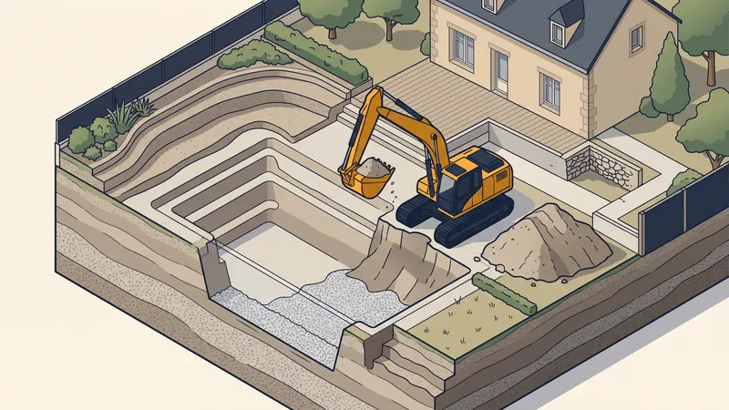

Terrassement Piscine : Guide Complet, Prix & Étapes en 2027
Devis gratuit sous 24 h 07 45 14 20 49 WhatsAppNotre service : terrassement de piscine
En bref
- Combien coûte le terrassement d'une piscine ? Le terrassement d'une piscine standard (8x4 m) coûte entre 2 500 et 5 000 euros en sol meuble et entre 5 000 et 11 000 euros en sol rocheux en 2027. L'évacuation des terres est en supplément.
- Combien de temps dure le terrassement d'une piscine ? Comptez 1 à 3 jours en sol meuble et 3 à 7 jours en sol rocheux pour l'excavation. L'évacuation des terres ajoute 1 à 2 jours.
- Quelles dimensions creuser pour une piscine ? Ajoutez 50 à 80 cm de surlargeur de chaque côté et 15 à 20 cm de surprofondeur par rapport aux dimensions du bassin.
Le terrassement de piscine est la première étape concrète de votre projet aquatique. Cette phase cruciale conditionne la réussite de l'ensemble de l'installation : un terrassement mal réalisé peut entraîner des problèmes structurels graves et coûteux. Ce guide complet vous explique les étapes, les prix et les précautions à prendre pour un terrassement de piscine réussi à Aix-en-Provence et en région PACA. Autour d'une maison en Provence, le débroussaillement relève d'une obligation légale : voyez notre guide sur le débroussaillement obligatoire en PACA.

Sommaire
- Prix du terrassement de piscine en 2027
- Les étapes du terrassement de piscine
- Spécificités du terrassement piscine en Provence
- Choix des engins de terrassement
- Refaire une plage de piscine : préparation et revêtements
- Erreurs à éviter
- Coût total d'un projet piscine : la part du terrassement
- FAQ : Vos questions sur le terrassement piscine
- Les erreurs courantes à éviter
- Questions fréquentes
- Pourquoi faire appel à un pro comme STP Terrassement
Prix du terrassement de piscine en 2027
| Dimensions piscine | Volume excavé | Prix sol meuble | Prix sol rocheux |
|---|---|---|---|
| 6 x 3 m (mini-piscine) | 35 - 45 m³ | 1 500 - 3 000 € | 3 000 - 6 500 € |
| 8 x 4 m (standard) | 60 - 80 m³ | 2 500 - 5 000 € | 5 000 - 11 000 € |
| 10 x 5 m (grande) | 90 - 120 m³ | 4 000 - 7 000 € | 7 500 - 16 500 € |
| 12 x 6 m (très grande) | 130 - 170 m³ | 5 500 - 9 000 € | 10 500 - 22 500 € |
| Couloir de nage 15 x 3 m | 80 - 100 m³ | 3 500 - 6 000 € | 6 500 - 14 000 € |
Ces montants se lisent avec notre grille de tarifs terrassement 2027, qui réunit sur une page les prix des autres postes d'un chantier.
Ces prix comprennent l'excavation et le profilage. En sol rocheux, le surcoût est de 40 à 80 €/m³ excavé, soit 1,5 à 2,5 fois le prix en sol meuble (+ 2 500 à 6 000 € pour un 8 x 4 m). L'évacuation des terres est en supplément (25 à 60 €/m³ selon la distance, chargement, camion et taxe de décharge compris).

Les étapes du terrassement de piscine
1. Préparation et implantation
Avant de commencer à creuser, plusieurs vérifications sont essentielles :
- DICT (Déclaration d'Intention de Commencement de Travaux) : obligatoire pour vérifier l'absence de réseaux enterrés (gaz, eau, électricité, télécom)
- Piquetage : traçage des contours de l'excavation avec les surlargeurs de travail (50 à 80 cm de chaque côté)
- Repérage des niveaux : définition de la cote de terrassement par rapport à un point de référence fixe
- Plan d'accès : vérification que les engins peuvent accéder au chantier et que les camions peuvent évacuer les terres
2. Décapage de la terre végétale
La couche de terre végétale (15 à 30 cm) est retirée et stockée séparément. Cette terre pourra être réutilisée pour le modelage paysager autour de la piscine ou pour la création de massifs.
3. Excavation du bassin
L'excavation est réalisée à la pelle mécanique (8 à 15 tonnes pour une piscine standard) ou à la mini-pelle (2 à 5 tonnes pour les accès étroits). Les dimensions du trou incluent :
- Surlargeur : 50 à 80 cm de chaque côté du bassin pour permettre le coffrage et les travaux
- Surprofondeur : 15 à 20 cm sous le fond de la piscine pour le radier de béton
- Talus : pentes de fouille à 60-70° en sol meuble, verticales en sol rocheux
4. Profilage et nivellement
Le fond de fouille est soigneusement nivelé au laser rotatif pour garantir une planéité parfaite. Les parois sont dressées et nettoyées. Cette étape est critique pour la pose ultérieure de la structure du bassin (béton coulé, coque polyester, kit panneaux).
5. Drainage et gestion de l'eau
Si une nappe phréatique ou des arrivées d'eau sont détectées, un système de drainage périphérique (drain agricole, puisard) et un pompage de chantier sont mis en place. En région PACA, ce problème est plus rare mais peut survenir dans les vallées et les zones basses.
6. Évacuation ou stockage des terres
Le volume de terre excavé est important : pour une piscine 8 x 4 m, comptez 60 à 80 m³ de terre (avec le foisonnement). Deux options :
- Réutilisation sur place : création de talus, remblaiement de zones basses, modelage paysager (économie de 30 à 50 % sur l'évacuation)
- Évacuation en décharge : transport par camions benne (25 à 60 €/m³ selon la distance, taxe de décharge comprise)
Spécificités du terrassement piscine en Provence
La région Aix-en-Provence et le sud de la France présentent des caractéristiques qui impactent fortement le terrassement de piscine :
Sols calcaires et rocheux
C'est le défi majeur en Provence. Les sols calcaires, très fréquents dans les collines autour d'Aix, Trets, Gardanne ou Saint-Maximin, nécessitent l'utilisation d'un brise-roche hydraulique (BRH). Ce qui double facilement le temps de chantier et multiplie le coût par 1,5 à 2,5 (surcoût de 40 à 80 €/m³). Dans certains cas, le micro-minage peut être envisagé pour fracturer la roche.
Terrains en pente
Les propriétés provençales sont souvent en pente, ce qui impose des murs de soutènement et un travail de terrassement plus complexe. La piscine peut être semi-enterrée ou intégrée dans la pente pour limiter les volumes d'excavation.
Période idéale
En PACA, la période idéale pour le terrassement de piscine s'étend de septembre à mai. L'été, les sols secs et durs sont plus difficiles à travailler, et la demande est forte (délais plus longs). Commander en automne ou en hiver permet souvent d'obtenir de meilleurs tarifs et d'avoir la piscine prête pour l'été.
Choix des engins de terrassement
| Engin | Poids | Adapté pour... | Tarif journalier |
|---|---|---|---|
| Mini-pelle | 1,5 - 3 t | Accès étroit, petites piscines | 200 - 300 €/jour nue, 500 - 600 € avec chauffeur |
| Pelle mécanique | 8 - 15 t | Piscines standard à grandes | 500 - 800 €/jour |
| Pelle + BRH | 8 - 20 t | Sol rocheux | 700 - 1 200 €/jour |
| Camion benne | 15 - 20 t | Évacuation des terres | 400 - 600 €/jour |
Refaire une plage de piscine : préparation et revêtements
Le terrassement d'un bassin et l'aménagement de ses abords sont deux chantiers différents, et la plage se rate plus souvent que la fouille. Ce qui la fait vieillir n'est presque jamais le revêtement visible : c'est le support, le drainage et la pente.
Ce qui détruit une plage de piscine
- Le remblai mal compacté autour du bassin. Après le coulage, la tranchée périphérique est rebouchée en vrac ; elle tasse pendant deux ans, et la plage posée dessus suit le mouvement. Un remblai compacté par couches de 20 cm supprime le problème.
- L'absence de pente. Il faut 1,5 à 2 % vers l'extérieur du bassin, pas vers lui : l'eau de pluie chargée de poussière ne doit pas rejoindre le filtre.
- Le joint de dilatation oublié entre la margelle et la plage. Sans lui, la dilatation d'été fissure l'un ou l'autre — en Provence, l'écart de température de surface dépasse couramment 40 °C sur une journée.
- Les racines. Un pin à moins de quatre mètres soulèvera la plage. Une barrière anti-racines au terrassement coûte une fraction d'une reprise.
Prix indicatifs des revêtements de plage
| Revêtement | Prix au m² | Remarque |
|---|---|---|
| Béton désactivé | 90 à 140 € | Antidérapant, chauffe moins qu'une pierre sombre |
| Dallage pierre naturelle | 90 à 160 € | Selon la pierre et le calibre |
| Carrelage extérieur sur plots | 110 à 180 € (60 à 100 € sur dalle existante) | Démontable, demande un support parfaitement réglé |
| Résine drainante (moquette de pierre) | 80 à 140 € | Sans joint, perméable, sensible au support |
| Margelles seules | 60 à 150 €/ml | Pierre reconstituée ou naturelle |
| Préparation du support seule | 25 à 50 € | Décaissement, grave compactée, drainage, pente |
La dernière ligne est celle qu'on oublie dans les comparaisons. Deux devis qui annoncent le même carrelage à 20 €/m² d'écart ne disent rien tant qu'on ignore lequel des deux refait le support. Sur une plage qui bouge, reprendre le support est l'essentiel du travail ; poser le revêtement en est la partie visible.
Notre contrat d'assurance décennale couvre les terrasses maçonnées, plages et margelles autour de piscines privatives, ainsi que le terrassement et le drainage qui les précèdent ; le détail figure dans nos mentions légales. La construction du bassin lui-même relève du pisciniste.
Devis Terrassement Piscine
STP Terrassement réalise le terrassement de votre piscine à Aix-en-Provence et dans toute la région PACA, y compris en sol rocheux.
Pressé ? 07 45 14 20 49 ou WhatsApp
Erreurs à éviter
- Ne pas faire de DICT : risque de couper un réseau enterré (gaz, électricité) avec des conséquences graves
- Sous-estimer le sol : ne pas prévoir le surcoût lié à un sol rocheux peut exploser le budget
- Oublier les surlargeurs : un trou aux dimensions exactes de la piscine ne laisse pas de place pour travailler
- Négliger le drainage : les arrivées d'eau non traitées peuvent soulever la structure de la piscine
- Stocker les terres trop près du bord : risque d'éboulement des parois sous le poids des remblais
- Ne pas vérifier la stabilité du terrain : en terrain en pente, un éboulement peut se produire
Coût total d'un projet piscine : la part du terrassement
Le terrassement représente en moyenne 10 à 20 % du coût total d'une piscine. Voici la répartition type pour une piscine béton 8x4 m :
| Poste | Part du budget | Coût estimé |
|---|---|---|
| Terrassement + évacuation | 10 - 20 % | 4 000 - 8 000 € |
| Structure béton (gros oeuvre) | 30 - 40 % | 8 000 - 15 000 € |
| Étanchéité / Revêtement | 15 - 20 % | 4 000 - 8 000 € |
| Équipements (filtration, pompe) | 15 - 20 % | 3 000 - 7 000 € |
| Plages et aménagements | 10 - 15 % | 3 000 - 6 000 € |
FAQ : Vos questions sur le terrassement piscine
Combien coûte le terrassement d'une piscine ?
Le terrassement d'une piscine standard (8x4 m) coûte entre 2 500 et 5 000 euros en sol meuble et entre 5 000 et 11 000 euros en sol rocheux en 2027. L'évacuation des terres est en supplément.
Combien de temps dure le terrassement d'une piscine ?
Comptez 1 à 3 jours en sol meuble et 3 à 7 jours en sol rocheux pour l'excavation. L'évacuation des terres ajoute 1 à 2 jours.
Quelles dimensions creuser pour une piscine ?
Ajoutez 50 à 80 cm de surlargeur de chaque côté et 15 à 20 cm de surprofondeur par rapport aux dimensions du bassin.
Que faire des terres excavées ?
Réutilisez-les pour le modelage paysager ou faites-les évacuer en décharge (25 à 35 €/m³ pour une décharge à moins de 10 km, taxe de décharge comprise). Pour une piscine 8x4 m, comptez 60 à 80 m³ de terre.
Faut-il une autorisation pour creuser une piscine ?
Oui : déclaration préalable pour les piscines de plus de 10 m², permis de construire au-delà de 100 m² ou avec abri haut. Le DICT est obligatoire avant tout terrassement.
Pour vérifier les règles applicables : les règles d'urbanisme pour une piscine sur Service-Public.fr et la carte des risques de votre parcelle sur Géorisques.